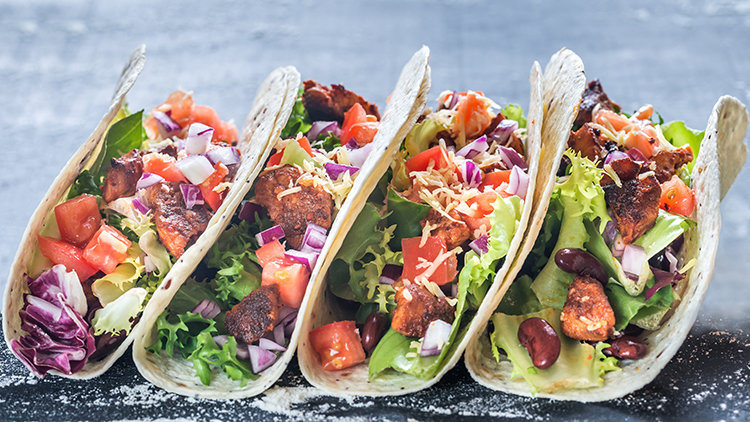

墨西哥夾餅（Taco）
墨西哥夾餅（Taco），是墨西哥的傳統，用一張小麥粉或穀物粉製作的墨西哥薄餅玉米餅）將肉餡、蔬菜等捲成字型。墨西哥捲餅的配料。佐的調料有莎莎醬（salsa sauce）、鱷梨醬（guacamole）、番茄粒等。塔可間隙裡滿是“塞子”人類學說顯示·，小魚的夾餅是生活在墨西哥山谷湖區裝扮的傳統小吃。
材料
70 g 墨西哥玉米粉
1/2 小匙 鹽
70 g 水 （+- 10g左右，看麵團的濕潤度而定，太乾無法成團請多加水，如果太濕非常黏手，則需要多加玉米粉）
塔可餅內餡：
600 g 去骨雞腿肉
1/2 小匙 鹽、胡椒
1 大匙 植物油
2 小匙 孜然粉
1 小匙 煙燻紅椒粉
1/2 小匙 辣椒粉
1/2 小匙 洋蔥粉
1/2 小匙 蒜粉
1/2 小匙 墨西哥辣椒粉
適量 生菜、番茄、酸奶、香菜（看個人口味最後加上去）
烹飪步驟:
1. 玉米粉、鹽、水一起混和均勻後，整理成團狀，蓋上濕布/保鮮模避免乾燥，靜置20分鐘以上
2. 準備Tortilla Press，兩面塗點油，墊上一層塑膠袋或是烘培紙。取約4公分大小的麵團放在機器的正中間。
3. 往下一壓成圓餅形狀，小心地把玉米餅從帶袋子上移出，蓋上微微噴濕地毛巾，注意不要讓他乾燥了。
4. 自己變化餅皮，雙色的餅皮滿有特色的～
5. 以中大火預熱鍋子，刷一點點油，玉米餅每面煎30秒，
6.烤箱預熱185度。利用烤盤的空隙，將煎完的玉米餅稍微凹成U字型利用烤架固定，烘烤7~9分鐘定型、變脆。顏色會稍微變深。＊注意不要煎過頭，接下來要凹成U字型進烤箱烘烤，如果煎過頭則會斷裂。
7.顏色美，酥脆口感，好喜歡自己做的墨西哥玉米餅！
